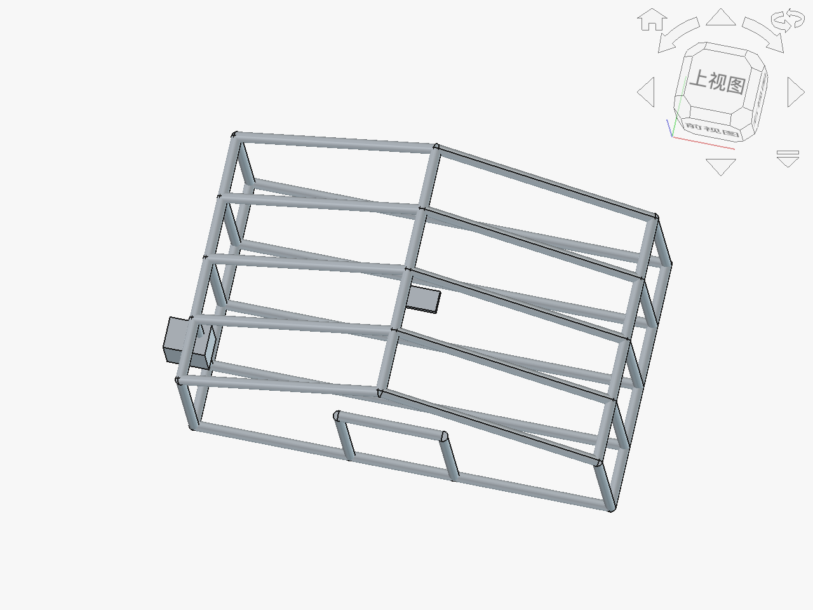

一、教材分析
本节为苏教版《技术与设计2》第四单元"控制及其设计"的第3节，是承接开环控制和闭环控制概念之后的深化应用环节。教材以闭环控制系统的方框图为分析工具，引导学生理解闭环控制的核心机制——反馈，以及输入、传感器、比较器、执行器、输出、反馈六个环节的协作关系。
本节是整个必修二的收束性内容，将前面学习的结构、流程、系统知识综合运用于控制系统设计中。结合OBE-GAI范式，本课预期学习产出定义为：学生能运用"闭环控制·反馈环分析法"分析一个闭环控制系统（智能温室大棚），并结合AI辅助完成控制参数预测与控制方案设计，理解反馈机制在自动控制中的核心价值。课程采用跨学科类比策略，以人体体温调节类比工程闭环控制，帮助学生建立从生物到工程的迁移认知。
二、学情分析
高二学生在生物课程中已学习过人体体温调节、血糖调节等负反馈机制，对"反馈"概念有生物学层面的认知基础，但尚未将这一概念迁移到工程技术领域。学生在前两节课已学习开环控制和闭环控制的基本概念，能区分两者的差异，但对闭环控制六个环节的具体功能和协作关系理解不够深入。在实践层面，学生对传感器、控制器等电子元件有一定了解但缺乏系统设计经验。AI工具使用方面，学生需要学习如何用AI进行"如果改变某个控制参数，系统响应会怎样变化"的参数预测和系统行为模拟。
三、教学目标（五维核心素养）
技术意识
理解闭环控制在现代智能系统中的普遍价值，形成"反馈使系统更智能"的技术观念
工程思维
掌握"闭环控制·反馈环分析法"，能从六个环节系统分析闭环控制系统
创新设计
能结合AI参数预测，设计智能温室大棚控制方案并进行参数优化
图样表达
能绘制闭环控制系统方框图，标注六个环节及反馈路径
物化能力
能通过模拟实验体验传感器数据采集与控制响应过程
四、教学重难点
教学重点
- 闭环控制系统的六个环节及其功能（输入→传感器→比较器→执行器→输出→反馈）
- "闭环控制·反馈环分析法"的运用
- 运用AI预测不同控制参数对系统响应效果的影响
教学难点
- 理解反馈机制如何使系统实现"自动纠偏"和"动态平衡"
- 跨学科迁移：从人体体温调节类比到工程闭环控制
- 对AI预测的控制参数效果进行批判性判断和方案优化
五、教学策略与方法
OBE反向设计 本课以"产出一个智能温室大棚闭环控制方案（含方框图、参数分析、AI交互记录）"为终点，倒推教学活动。采用跨学科类比策略——以人体体温调节（生物学）类比工程闭环控制（技术学），降低抽象概念的认知门槛。
分层提示词策略
基础组：分析基本控制环节
用AI辅助分析智能温室大棚闭环控制的基本环节，标注各环节的功能和信号流向。
提升组：AI辅助参数优化
用AI预测不同温度设定值和湿度参数对作物生长的影响，进行参数优化决策。
高阶组：设计自适应控制策略
用AI辅助设计根据作物生长阶段自动调整控制参数的自适应控制策略。
原创教学工具：闭环控制·反馈环分析法
将任何闭环控制系统拆解为六个环节，逐环节分析其功能、输入输出信号和反馈路径：
六环节形成闭合回路，反馈是闭环控制的核心
六、教学过程
环节一：情境导入——人体体温调节的跨学科类比
情境创设：教师提问"当你从空调房走到烈日下，身体会发生什么变化？"引导学生回忆生物学知识：皮肤血管扩张散热→汗腺分泌增加→体温维持在37°C左右。教师追问："是谁在'指挥'这些变化？身体怎么知道该散热了？"
跨学科类比 | 人体体温调节 = 天然的闭环控制系统
教师引导学生将人体体温调节映射到控制系统六个环节：
| 闭环控制环节 | 人体体温调节对应 | 功能说明 |
|---|---|---|
| 输入（设定值） | 下丘脑设定37°C | 体温的正常设定值 |
| 传感器 | 皮肤和内脏温度感受器 | 检测实际体温 |
| 比较器 | 下丘脑 | 比较设定值与实际值 |
| 执行器 | 血管、汗腺、肌肉 | 执行散热或产热动作 |
| 输出（被控量） | 实际体温 | 被控制的物理量 |
| 反馈 | 体温变化被感受器再次检测 | 形成闭合回路 |
概念引出：教师点明——人体就是一个精密的闭环控制系统！"反馈"是核心：身体不断检测实际体温并与设定值比较，一旦出现偏差就启动调节机制。工程上的闭环控制系统正是模仿了这种"检测→比较→执行→反馈"的机制。
任务发布：教师宣布本课项目——"设计一个智能温室大棚闭环控制系统"，学生将运用反馈环分析法分析控制系统，并用AI辅助预测控制参数效果。
环节二：概念建构——反馈环分析法与六环节解析
Step 1：从类比到工程（5分钟）
教师引导学生从人体体温调节类比迁移到工程闭环控制："如果我们想控制温室大棚的温度，需要哪些环节？"学生参照人体类比，逐步推导出智能温室大棚的六环节：
- 输入（设定值）：目标温度25°C、湿度60%（由种植者设定）
- 传感器：温湿度传感器（如DHT22），实时检测棚内温湿度
- 比较器：控制器（如Arduino/PLC），比较设定值与实测值
- 执行器：加热器、风扇、喷雾器、遮阳帘（根据偏差启动对应设备）
- 输出（被控量）：棚内实际温湿度
- 反馈：传感器持续检测实际温湿度并传回控制器，形成闭合回路
Step 2：反馈机制深度讲解（5分钟）
教师重点讲解反馈的核心价值——"自动纠偏"。以温室温度控制为例：当棚内温度高于25°C设定值时，传感器检测到偏差→比较器计算偏差量→执行器启动风扇降温→温度下降→传感器再次检测→如果仍偏高则继续降温，直到温度回到设定值附近。这个"检测→比较→执行→再检测"的循环就是反馈回路。
教师对比开环控制和闭环控制："开环控制就像定时浇水——不管土壤干湿，每天浇一次；闭环控制就像看土壤湿度计浇水——干了才浇，不干不浇。哪个更精准？当然是闭环，因为它有反馈。"
Step 3：方框图绘制规范（5分钟）
教师展示用FreeCAD建立的控制系统的三维结构模型，展示传感器、控制器、执行器、被控对象（温室大棚）的空间布局和连接关系。
- 传感器位置：温湿度传感器安装在棚内中央，远离门口和通风口
- 控制器位置：控制柜安装在棚外便于操作处
- 执行器分布：加热器在棚内底部、风扇在顶部通风口、喷雾器在棚顶
- 线缆连接：展示传感器→控制器→执行器的信号传输路径
教师引导学生绘制智能温室大棚闭环控制系统方框图，标注六个环节和信号流向。
渲染图：智能温室大棚框架 (Greenhouse)

该模型含55个部件，展示温室大棚的完整结构——5组人字屋架、纵向系杆、屋脊梁、门框，以及传感器支架和控制箱。学生可直观理解闭环控制系统的硬件组成在温室中的物理布局。
环节三：深度探究——AI辅助参数预测与控制方案设计
Step 1：AI辅助控制参数预测（7分钟）
学生用AI预测不同控制参数对温室大棚作物生长的影响，进行参数优化决策。
AI典型预测回复（示例）：
| 参数方案 | 生长周期 | 能耗 | 病虫害风险 | 综合评价 |
|---|---|---|---|---|
| 25°C/60% | 标准周期（约90天） | 中等 | 低 | 均衡推荐 |
| 28°C/70% | 缩短约15%（约77天） | 高（降温耗能大） | 高（高湿易病害） | 速产但风险大 |
| 22°C/50% | 延长约20%（约108天） | 低 | 极低 | 安全但周期长 |
学生判断环节：学生需判断AI预测是否合理。典型分析："AI说28°C能缩短生长周期15%，这跟我查到的番茄最适生长温度25-28°C一致，可信。但AI说高湿70%会增加病虫害风险，这跟生物课学的真菌繁殖需要高湿环境一致。所以虽然方案2生长快，但风险太大。方案1最均衡，我选择25°C/60%。"
Step 2：AI模拟传感器数据变化（4分钟）
学生用AI模拟一天内温室大棚传感器数据的变化，分析控制系统的响应过程。
AI典型回复摘要：
- 8:00 — 温度低于设定值25°C，加热器启动；湿度偏高，暂不喷雾
- 12:00 — 温度远高于25°C，风扇全速运转+遮阳帘展开；湿度偏低，喷雾器间歇工作
- 15:00 — 温度达峰值38°C，所有降温设备全开；持续喷雾维持湿度
- 18:00 — 温度接近设定值，风扇降速；遮阳帘收起
学生根据AI模拟数据，绘制一天内控制系统响应时间线，标注各执行器的启停时刻，理解闭环控制的动态响应过程。
Step 3：控制方案设计（4分钟）
学生综合AI参数预测和传感器数据模拟结果，设计完整的智能温室大棚闭环控制方案，包含：系统方框图、控制参数设定值、各执行器启停逻辑、异常处理预案（如传感器故障时的应急策略）。填写《AI交互记录表》。
环节四：迁移应用——自适应控制策略设计
Step 1：高阶组挑战——自适应控制（4分钟）
高阶组任务 学生用AI辅助设计根据作物生长阶段自动调整控制参数的自适应策略。
AI给出建议后，学生需判断其合理性并完善方案。例如，AI可能建议用时间判断生长阶段（播种后第N天），学生可质疑："仅靠时间判断不够准确，因为温度变化会影响生长速度。应该增加图像识别传感器判断植株形态。"——这就是批判性使用AI的体现。
Step 2：方案展示与互评（4分钟）
2-3组展示控制方案，其他组提问评价。教师引导学生关注：方框图是否完整标注六环节？反馈路径是否正确？控制参数选择是否有AI数据支撑和合理判断？
环节五：总结反思——反馈的哲学
教师总结："闭环控制的核心是'反馈'——不断检测、比较、纠偏。这不仅是工程原理，也是一种思维方式：做事要像闭环控制一样，及时检查结果、与目标对比、调整行动。AI能帮我们预测参数效果和模拟系统响应，但判断什么参数最合适、怎么应对异常，需要我们结合多学科知识做决策。"
提问引导反思："你生活中有哪些'闭环控制'的例子？（如学习中的纠错、运动中的调整）AI的参数预测你觉得可信吗？有没有不合理的地方？"总结必修二四大模块的内在联系：结构是基础，流程是过程，系统是整体，控制是智慧——四者共同构成技术与工程的完整图景。
七、板书设计
八、教学反思预设
- 跨学科类比效果：人体体温调节类比是本课亮点，能有效帮助学生从已有生物知识迁移到工程控制概念。但需注意类比的局限性——人体调节是非意识的自适应过程，而工程控制需要人为设计控制策略，两者在复杂度和灵活性上有差异。
- 六环节理解深度：传感器和执行器环节学生容易理解，但"比较器"环节可能较抽象。需用"温度计读数与目标值相减得到偏差"这类具体例子帮助学生理解比较器的功能。
- AI参数预测可信度：AI给出的"温度设定25°C，湿度60%，预计作物生长周期缩短15%"等预测数据需要学生结合农业知识判断合理性。部分学生可能缺乏农业背景知识，教师可提前准备番茄生长最适温湿度的参考资料供学生对照。
- 分层任务实施：基础组分析六环节和提升组参数预测是核心要求，高阶组自适应控制建议设为选做挑战。课堂时间优先保证反馈环分析法和AI辅助参数预测两个核心环节。
- FreeCAD模型展示：控制系统结构模型能帮助学生理解传感器、控制器、执行器的空间布局，但需注意聚焦控制系统结构而非建筑结构，避免偏离主题。
- 与必修二整体的收束：本课作为必修二最后一个核心教学设计，应在总结环节点明四大模块的内在联系，帮助学生建立完整的技术与工程认知体系。
九、AI应用说明
范式定位：OBE-GAI模式
本教案AI应用的核心定位是"控制参数预测器与系统行为模拟器"，AI负责预测不同控制参数的效果和模拟系统响应过程，学生负责基于预测结果进行参数优化决策和方案设计。具体应用：
| 环节 | AI应用方式 | 顾问定位体现 | 学生决策任务 |
|---|---|---|---|
| 环节三 | 预测不同温湿度参数对作物生长的影响 | 提供参数效果预测数据 | 结合农业知识判断合理性并选择参数 |
| 环节三 | 模拟一天内传感器数据变化和系统响应 | 提供系统行为动态模拟 | 分析控制系统的动态响应过程 |
| 环节四 | 辅助设计自适应控制策略 | 提供策略设计参考 | 批判性完善方案（质疑AI的判断依据） |
分层提示词设计
AI交互记录表
| 字段 | 说明 |
|---|---|
| 六环节分析 | 记录智能温室大棚闭环控制六环节及功能 |
| AI参数预测 | 记录AI对不同温湿度参数组合的预测数据 |
| 参数合理性判断 | 学生结合农业/生物知识判断AI预测是否合理 |
| 最终参数选择 | 记录选定的控制参数及选择理由 |
| 系统响应模拟 | 记录AI模拟的传感器数据变化和执行器响应 |
| 方案设计 | 完整的控制方案（方框图+参数+逻辑+异常处理） |
| AI建议的否决记录 | 记录否决的AI建议及否决理由（批判性核心） |
评价量规
| 评价维度 | 权重 | 优秀（90-100） | 合格（60-89） | 待改进（<60） |
|---|---|---|---|---|
| 反馈环分析 | 25% | 六环节分析准确、反馈路径正确 | 能标注主要环节 | 环节缺失或反馈错误 |
| AI交互质量 | 25% | 有参数判断和否决理由 | 有AI交互记录 | 全盘接受AI建议 |
| 方案设计 | 25% | 方框图规范、参数合理、含异常处理 | 有基本方案和方框图 | 方案不完整 |
| 跨学科迁移 | 15% | 能准确类比人体调节与工程控制 | 理解类比关系 | 类比混淆 |
| 表达与协作 | 10% | 展示清晰、能有效回应提问 | 能完成基本展示 | 表达不清晰 |
FreeCAD模型引用说明
本课引用智能温室大棚控制系统FreeCAD结构模型，展示传感器、控制器、执行器、被控对象（温室大棚）的空间布局和连接关系：
- 空间布局展示：传感器安装在棚内中央，控制器在控制柜中，执行器分布在棚内各位置
- 信号路径可视化：用线条标注传感器→控制器→执行器的信号传输路径
- 反馈回路呈现：通过模型展示从执行器动作→被控对象变化→传感器检测的完整反馈回路
渲染图：智能温室大棚框架 (Greenhouse)
该模型含55个部件，展示温室大棚的完整结构——5组人字屋架、纵向系杆、屋脊梁、门框，以及传感器支架和控制箱。学生可直观理解闭环控制系统的硬件组成在温室中的物理布局。